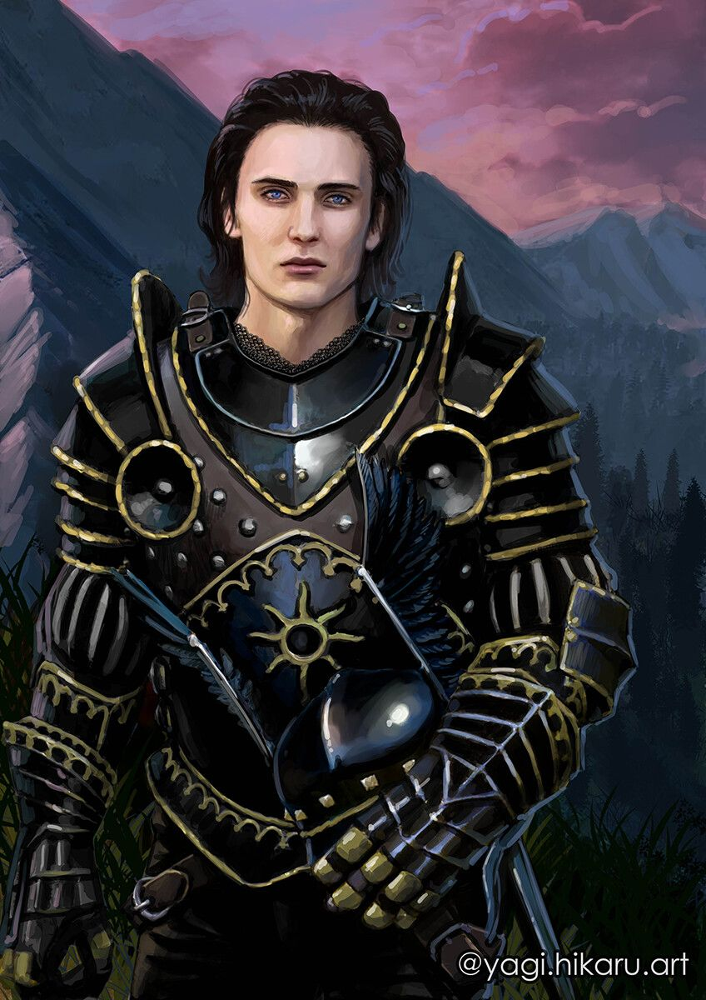

Personagens Principais
-
Geralt
Apesar do título, Geralt não era natural de Rivia . Depois de ser deixado com os bruxos por sua mãe, Visenna , ele cresceu na fortaleza de Kaer Morhen
-
Yennefer
Yennefer é uma feiticeira talentosa e uma das personalidades femininas mais forte no universo criado pelo Sapkowski.
-
Ciri
Treinada por Geralt para ser uma caçadora e por Yennefer para ser uma feiticeira,Ciri consegue conciliar o melhor de cada um.
-
Jaskier
Julian, mais conhecido como Jaskier ou Dandelion, é um poeta e bardo, melhor amigo de Geralt
-
Regis
Regis se tornou um dos amigos mais leais que Geralt teve ao longo de seus quase 100 anos de vida.
-
Cahir
Cahir, filho de Cealach e sobrinho de Assire var Anahid, o Nilfgaardiano que não é Nilfgaardiano